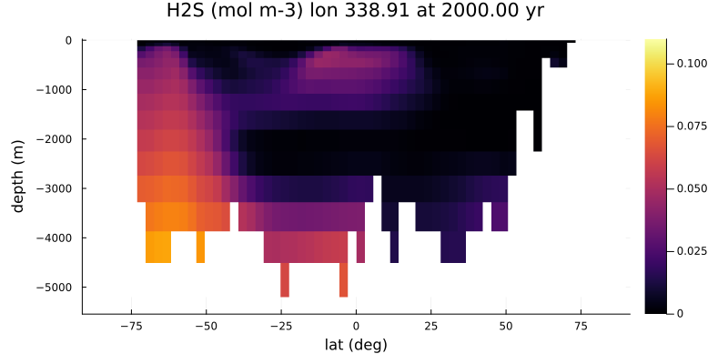

MITgcm transport matrix ocean-only examples
GCM ocean transport test cases using transport matrices in format defined by (Khatiwala, 2007)
Examples require a download of Samar Khatiwala's TMM files (for MITgcm, UVic models) as described in https://github.com/samarkhatiwala/tmm where TM files are from http://kelvin.earth.ox.ac.uk/spk/Research/TMM/TransportMatrixConfigs/. The TMMDir key in examples\LocalPreferences.toml should then be set to the folder location on the local machine.
Default configurations are set to run for ~10 model yr, single core, single fixed timestep. See comments in .jl files to change run time and enable threading and split-timestep solver (with fast timestep for biogeochemistry and vertical transport).
Approximate model CPU times below are for a single laptop core (a CPU i5-6300U from ~2015).
2.8 degree O2 only abiotic
Minimal test case for ocean transport and air-sea exchange.
Tracers: atmosphere O2, ocean O2
julia> include("MITgcm_2deg8_abiotic.jl")Wallclock time: 2.3 s (model yr)-1 using 1 core, with default timestep = 86400 s (1 day)
2.8 degree P, O2
Minimal test case for biotic ocean.
Tracers: atmosphere O2, ocean O2, P, DOP
julia> include("MITgcm_2deg8_PO4MMbase.jl")Wallclock time: 1.4 s (model yr)-1 using 4 cores, with default timestep = 86400 s (1 day)
2.8 degree P, O2, S, DIC/TAlk
Minimal test case for a biotic ocean with carbonate chemistry, SO4/H2S and CH4.
Modern Earth configuration with O2 set to 0.1 PAL with to provide an anoxic ocean test case.
Tracers: atmosphere O2, CO2(x2), ocean O2, P, DOC(x2), H2S(x2), SO4(x2), CH4(x2), DIC(x2), TAlk (13 ocean tracers, including d13C and d34S isotopes)
julia> include("MITgcm_2deg8_PO4MMcarbSCH4.jl")Wallclock time: 2.8 s (model yr)-1 using 4 cores, with default timestep = 86400 s (1 day)

Figure 1
Surface P concentration at 2000yr. Red lines indicate longitudinal sections

Figure 2
H2S concentration at 2000yr, sections at longitudes corresponding to red lines in Figure 1
ECCO (~1 degree) P, O2
Minimal test case for biotic ocean.
Tracers: atmosphere O2, ocean O2, P
julia> include("MITgcm_ECCO_PO4MMbase.jl")Wallclock time: 50.0 s (model yr)-1 using 4 cores, with default timestep = 43200 s (1 day)